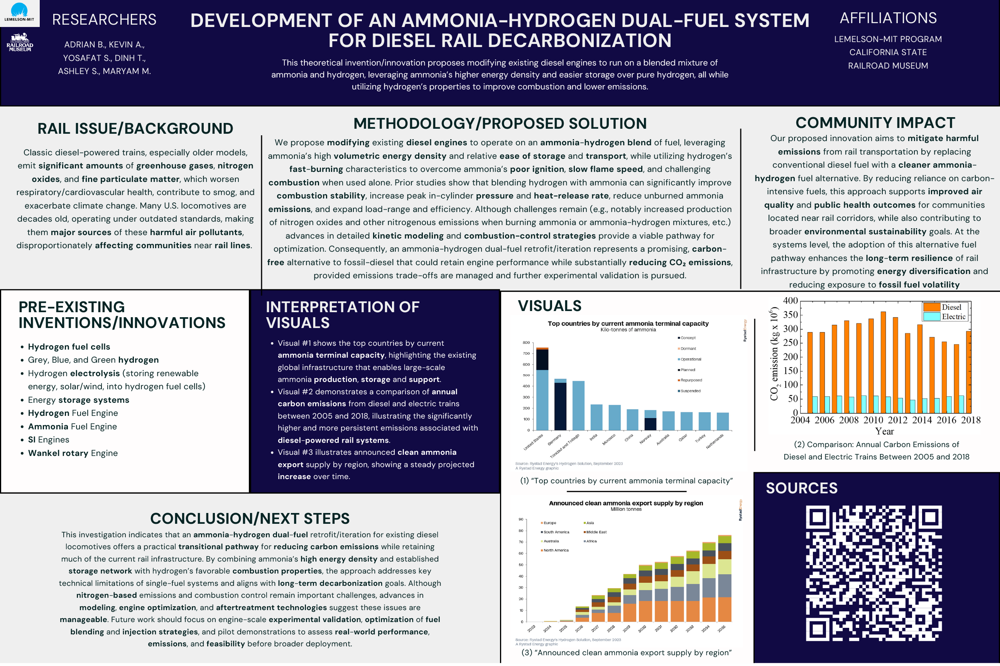
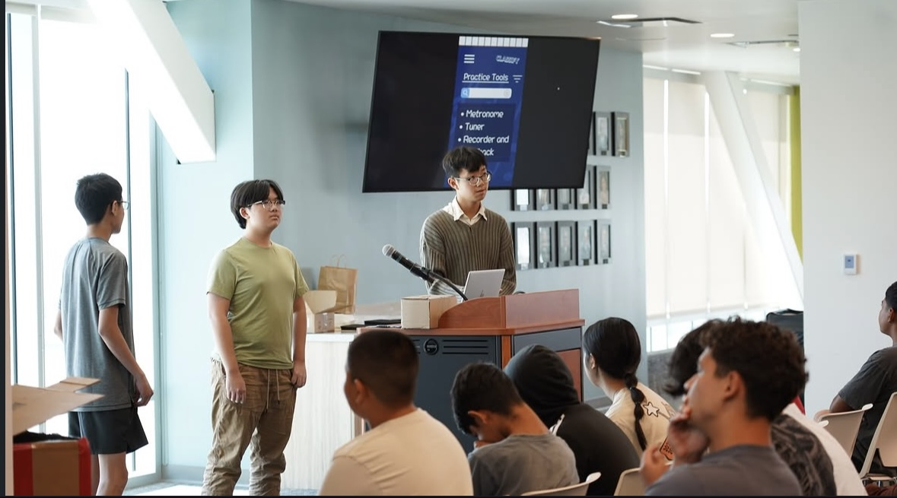

Initialize YS_OS v2.0...
[ OK ] Loading system architecture
[ OK ] Injecting Tailwind CSS protocols
[ OK ] Starting physics engine
Establishing connection...
High school senior developing modern software, optimizing transit infrastructure, and leading community initiatives.
My Tech Stack (Grab & Throw!)
Selected from a competitive statewide pool of 180 students for an elite engineering initiative co-hosted by Lemelson-MIT and the California State Railroad Museum. Engineered sustainable route-efficiency frameworks for municipal rail systems.
Successfully defended a technical research poster directly to over 100 executive stakeholders representing 17 California transit agencies.


An interactive subway routing application built as my All Star Code Capstone. Engineered complex interface logic and real-time station analytics packaged in a high-performance terminal UI.
root@YS_OS:~/subtivity$ ./start_server.sh
[INFO] Booting system telemetry...
[INFO] Connecting to transit API...
SUCCESS: Data stream active.
SOFTWARE ENGINEERING COHORT
Completed an intensive summer computer science program focusing on web development, technical networking, and entrepreneurial skills, culminating in a capstone demo day.
1 OF 10 SELECTED
Appointed from 350+ applicants to advise the executive board of the National Youth Leadership Council.
PROTOTYPE DEVELOPER
Earned 1 of 20 spots in a regional design-thinking intensive to conceptualize and pitch mobile app prototypes.
AMERICA ON TECH
Rigorous software engineering fellowship under corporate mentorship to master modern web architecture.
CORE LEADER
Selected for a year-long role orchestrating political education and advocacy supporting CA transit legislation.